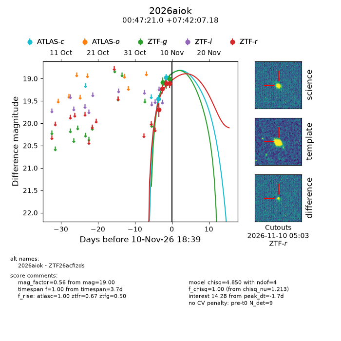
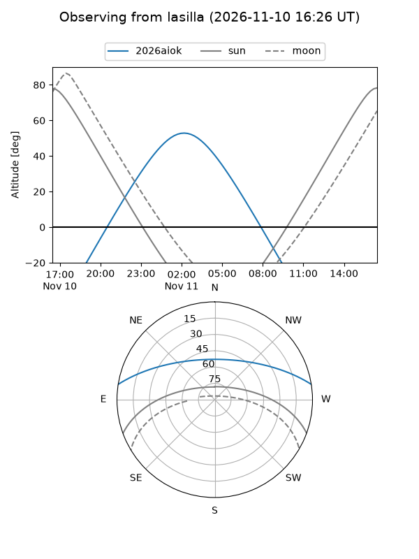
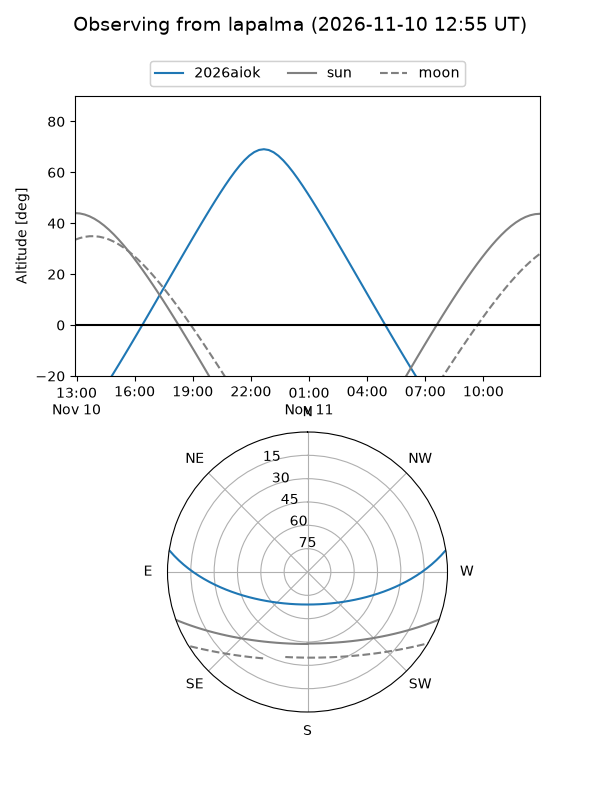
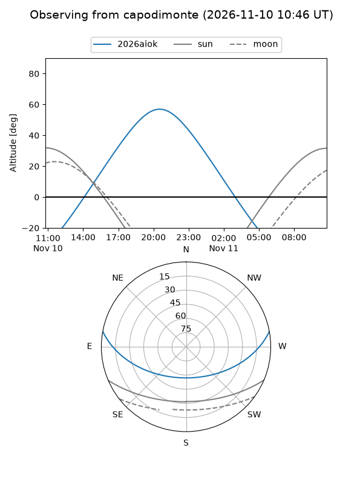
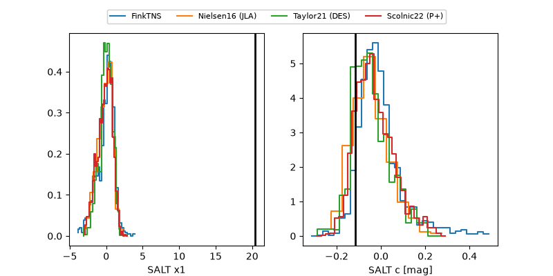

2026aiok
Target 2026aiok at 2026-11-11 06:42
Aliases and brokers:
FINK-ZTF: ztf.fink-portal.org/ZTF26acfizds
Lasair-ZTF: lasair-ztf.lsst.ac.uk/objects/ZTF26acfizds
ALeRCE-ZTF: alerce.online/object/ZTF26acfizds
YSE-PZ: ziggy.ucolick.org/yse/transient_detail/2026aiok
TNS name: wis-tns.org/object/2026aiok
Direct TNS query: direct search
alt names
ZTF26acfizds (ztf,fink_ztf)
2026aiok (tns,yse)
Coordinates:
equatorial (ra, dec) = 11.8375,+7.70200
equatorial (HMS+DMS) = 00:47:20.99,+07:42:07.18
galactic (l, b) = (121.1591,-55.15568)
Flags:
peak dt: -1.2
Photometry:
last atlasc=18.97, ztfg=19.00, ztfr=19.11
2 atlasc, 3 ztfg, 4 ztfr detections
Lightcurve

Visibility



Additional plots
